¿Existen tratamientos efectivos para el Covid-19 que el gobierno está ocultando?
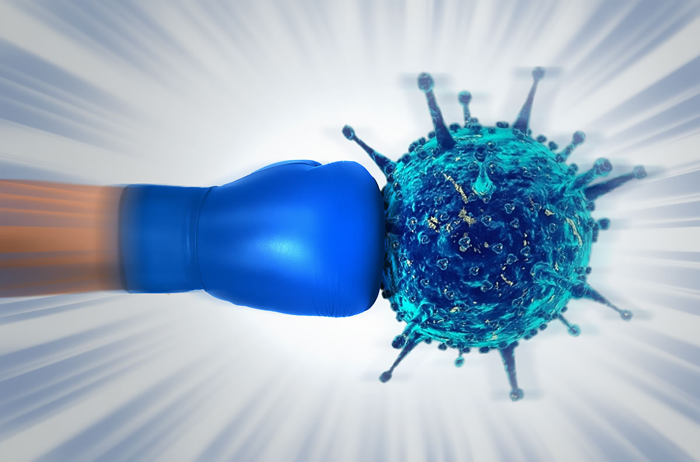
Javier Garcin/Apocaliptic.com
Cada día surgen más evidencias que sugieren que existen tratamientos para Covid-19 que podrían ser de gran utilidad en el marco de la pandemia actual, y no solo por la creciente cantidad de países (actualmente la mayoría) que los están implementando, sino también por el aumento en las investigaciones y estudios que refieren con gran amplitud esta posibilidad.
A continuación, exploramos algunas de las evidencias más notables que no se están considerando en México, al menos desde el gobierno federal, particularmente acerca de las dos alternativas (dosis incluidas) que cuentan con una mayor cantidad de estudios al respecto: la Hidroxicloroquina y la Ivermectina (en ambos casos acompañados de antibióticos y Zinc); así como también datos interesantes acerca de lo que pareciera ser una batalla política global por encubrirlo.
Descargo de responsabilidad.Aunque este escrito es el resultado de meses de investigación y seguimiento del tema, y a pesar de que se muestran con fines educativos tratamientos concretos que están siendo aplicados en otras latitudes con notable efectividad, y se tiene también la intención de informar acerca de alternativas accesibles destinadas a evitar los efectos graves del Covid-19, se exhorta a que en caso de seguir uno de los métodos descritos, sea siempre bajo la autorización y seguimiento personal de un profesional de la salud.
En muchos lados hemos escuchado acerca de la Hidroxicloroquina (HCQ); si lo ha visto en medios masivos, posiblemente sean cuestiones negativas, pues esta también es la postura de algunos gobiernos; aunque si usa redes sociales, quizá se haya encontrado también con cuestiones positivas, pues en realidad se viene aplicando desde hace meses en gran parte del mundo.Para este texto, buscamos considerar un espectro lo más amplio posible, que incluya la totalidad de evidencias disponibles acerca de su uso.
Al respecto, una de las herramientas más amplias existentes, es el seguimiento permanente que ha estado dando un colectivo de investigadores, para documentar de forma amplia el 100% de los estudios publicados en revistas científicas donde se analiza la posible contribución de la Hidroxicloroquina para evitar las consecuencias graves del Covid-19.Aquí, hasta la fecha suman ya más de 182 investigaciones.
Como parte de las conclusiones emitidas tras el análisis del universo de estudios existentes, destacan:
'
*Analizamos todos los estudios para HCQ y COVID-19.El 100% de los estudios de tratamiento temprano reportan un efecto positivo , con una reducción estimada del 65% en el efecto medido (muerte, hospitalización, etc.)usando un meta-análisis de efectos aleatorios, RR 0.35 [0.27-0.46].
*91% de los ensayos controlados aleatorios (ECA) para el tratamiento temprano, PrEP o PEP informan de efectos positivos,
la probabilidad de que esto ocurra para un tratamiento ineficaz es de 0,0059 '.
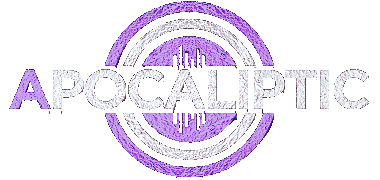
Cabe tomar en cuenta, que de acuerdo a las estimaciones de científicos como Didier Raoult, quien ha hecho un llamado para abordar en conjunto la problemática que este virus plantea, la infección se divide en 4 fases:
De acuerdo al universo de estudios disponibles a la fecha, se tiene un total consenso, respecto a que la HCQ resulta más efectiva, si se utiliza en fase de tratamiento temprano; es decir, tras la exposición al virus, o bien durante la fase de inicio de síntomas.
Cabe señalar también, que la letalidad del virus es tan baja en realidad, que estos tratamientos con base en la HCQ, se recomiendan solo para personas de riesgo (mayores de 45 años de edad), o bien con alguna comorbilidad, como puede ser obesidad, diabetes o hipertensión.
En el compendio mencionado, además de incluir los enlaces, fragmentos y comparativas gráficas de los resultados obtenidos en las investigaciones, se realizan también diversos análisis interesantes que revelan cierto sesgo, tanto en el origen de algunas investigaciones (que tienden a intentar mostrar datos negativos), así como también respecto a la cobertura en los grandes medios de información.
Por ejemplo, se encontraron que algunas investigaciones, eran a partir de estudios de hidroxicloroquina con dosis excesivas, muy cercanas a los niveles que ya se había definido previamente como riesgosos; o bien, que investigaron solo pacientes a quienes se aplicó el tratamiento en fase demasiado tardía; filtrando las investigaciones para excluir estas con métodos o resultados dudosos, resulta aún más abrumador el consenso acerca de que la hidroxicloroquina contribuye notoriamente a reducir la incidencia de efectos graves con el Covid-19.
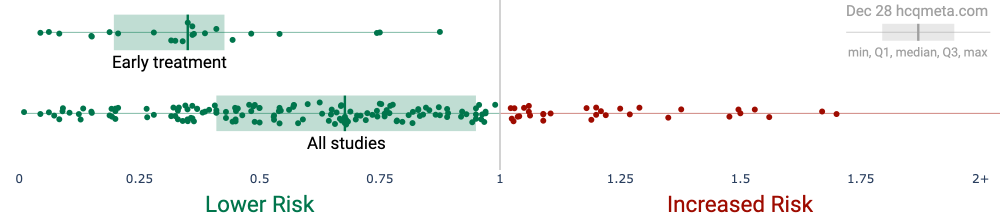
También estudiaron el comportamiento en grandes medios, documentando casos como el del NYT, donde se comprobó que el 100% de las publicaciones realizadas acerca de la HCQ, correspondían solo a aquellos estudios donde se documentaron atribuciones negativas, mostrando así un sesgo evidente que pretende de forma selectiva demeritar tendenciosamente las cualidades de esta sustancia.
Aunque en realidad, estos intentos de evitar que los beneficios de la HCQ para tratar el Covid-19 formen parte del conocimiento público, parecieran tener su origen en cierto ámbito político; por ejemplo, se documentó en el mismo reporte que 'significativamente más estudios en Norteamérica reportan resultados negativos, comparados con el resto del mundo (probabilidades de que sea casual = .001%'); pero además, la obstaculización a usar este fármaco, que es muy económico y de patente abierta, también parece mantenerse solamente en este tipo de países.
De acuerdo a estudios actualizados que se están haciendo para darle cobertura a los tratamientos que están siendo usados en las distintas naciones, se puede ver ampliamente como en la mayoría, ya se está aceptando desde el ámbito gubernamental a la HCQ como tratamiento para el Covid; en algunos casos promoviendo un uso amplio, e incluso en algunos llegando a usarse también como tratamiento profiláctico (preventivo).
El uso actual de HCQ/CQ para COVID-19 en todo el mundo.Observe que el uso ha cambiado con el tiempo y este mapa es para uso actual.La 'profilaxis similar a la HCQ' se refiere a los países en los que prácticamente todos los viajeros que llegan toman medicamentos similares a la HCQ para la profilaxis de la malaria.Las referencias que figuran a continuación incluyen referencias tanto al uso histórico como al actual.Fuente: https://c19study.com/countries.html (29 de diciembre 2020).Países en rojo es donde se tiene un uso limitado; en verde, aquellos donde se está usando de forma amplia; en verde limón, donde se tiene un uso mixto; y en verde claro aquellos donde se usa como 'profilaxis similar a la HCQ'.En gris donde no está claro o documentado su uso.
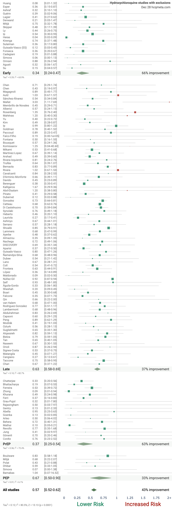
Muchos de los países que están aplicando algún tratamiento con base en la hidroxicloroquina, son también de los que mejor han evitado una alta mortalidad durante la pandemia; en cambio, países como México que continúan la prohibición, son de los que mantienen los más altos niveles tanto de letalidad (defunciones/casos confirmados), como de mortalidad (defunciones/población).
Comparativa de mortalidad en países que optaron por promover ampliamente tratamientos con HCQ (verde), en comparación con aquellos que la han prohibido o limitado (amarillo).Fuente: https://www.campbellanalytica.com/post/hydroxy-country-analysis.
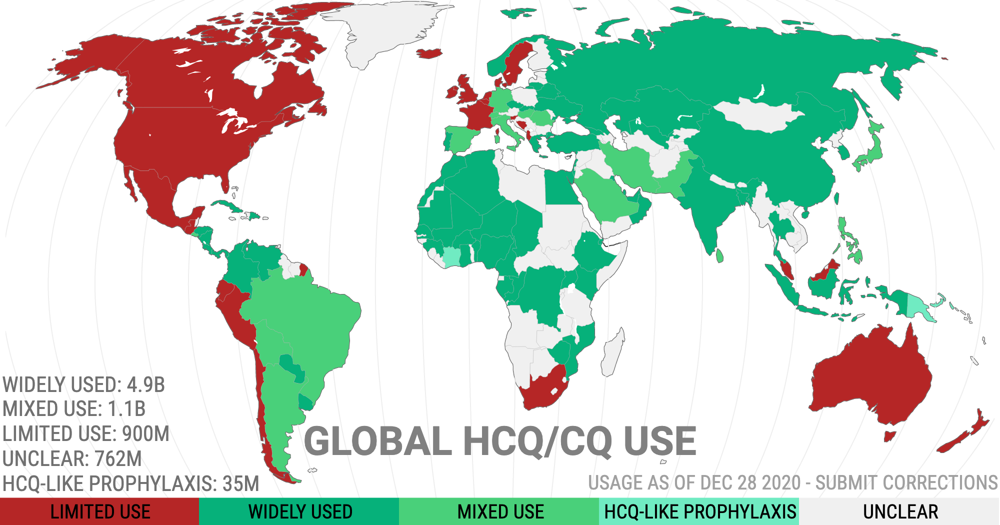
Además, la tendencia en el uso de la HCQ en meses recientes, es hacia una mayor autorización; es decir, cada vez más países lo están aceptando como parte de sus tratamientos para Covid, incluyendo algunos de los que se han visto más afectados por la pandemia, como el caso de Italia, cuyas autoridades sanitarias finalmente hace unos días emitieron su autorización de forma oficial, tras reiteradas peticiones de trabajadores de la salud.
Incluso en algunos países, donde las autoridades no han autorizado la HCQ, pero existe la libertad de prescripción para los médicos, se están presentando casos de consumo masivo de este medicamento; tal es el caso de Alemania; donde, de acuerdo a un reporte de Der Spiegel, se estaban concediendo mensualmente más de un millón de dosis diarias con este fármaco para tratar el Covid-19.Diversos investigadores atribuyen a esto, la menor tasa de letalidad en Alemania en comparación con otros países de Europa.
Ante la negativa de algunos gobiernos por reconocer los beneficios y mínimos riesgos de la HCQ, médicos y científicos están denunciando la gravedad de esta obstaculización, señalando que se está poniendo en riesgo también la vida de millones de personas; tal es el caso de connotados especialistas como el Dr Zev Zelenko en los Estados Unidos, y el francés Dr Didier Raoult en Europa.
Ambos, han definido sus propios protocolos, es decir tratamientos, para abordar el Covid-19.En el caso de Zelenko, se han estado usando ampliamente en EEUU; agrupaciones como la America’s Frontline Doctors han llevado a cabo diversas convenciones, algunas de ellos desde Washington D.C., reafirmando que en la práctica, han comprobado los beneficios positivos de la HCQ para tratar pacientes con Covid-19; y denunciando como injustificada, tanto la obstaculización para su adopción, así como también el gran entramado de medidas que resultan innecesarias, y que además están poniendo en grave riesgo la estabilidad física, económica y emocional de millones de ciudadanos.
Es importante también señalar, que los médicos que desarrollaron y están aplicando los tratamientos de forma amplia, no exponen a este como un remedio 100% efectivo, aún es una solución que no funciona en todos los casos; no obstante que sí mejora notoriamente los resultados.Por ejemplo, el tratamiento del Dr Zelenko, ha logrado reducir en un 95% las posibilidades de hospitalización en pacientes de alto riesgo; mientras que el Dr Raoult, en su hospital adjunto a la Universidad de Marsella, ha tenido una letalidad de tan solo el 0.5%.
El tratamiento del Dr Zelenko es el siguiente (cabe señalar que este método, ha estado en constante optimización, a partir de la información recabada, tanto por Zelenko, como también por connotados investigadores de todo el mundo, incluyendo a Raoult; para verificar que se trata de la versión más reciente disponible, se recomienda consultar la plataforma oficial del especialista):
Para pacientes de bajo riesgo
Es decir: – Menores a 45 años – Sin comorbilidades – Sin problemas para respirar
Tratar con: – Reposo y cuidados – Zinc elemental 50mg/día por una semana – Quercetina 500 mg/dos veces al día por una semana, o bien, EGCG 400/dos veces al día por una semana – Vitamina C 1000mg una vez al día por una semana – Vitamina D 50000iu una vez a la semana por 3 meses
Para personas de riesgo mayor
Es decir:
-Mayores de 45 años -O menores de 45 años con comorbilidadades -O en cualquier caso de dificultad para respirar
Tratar con: – Zinc elemental 50mg oral diario por una semana – HCQ 200 mg al día por 5/7 días – Azitromicina 500 mg/una al día por 5 días; o bien, Doxicilina 100 mg/una vez al día por una semana.– Vitamina C 1000mg una vez al día por una semana – Vitamina D 50000iu una vez a la semana por 3 meses
Para casos graves
Solo en caso de que el paciente mantenga síntomas por más de 7 días, tenga una reacción adversa o tenga alto riesgo de complicaciones, el protocolo Zelenko propone:
– Budesonida 1mg/2cc neb oral por 7 días y/o Dexametasona 8mg, una vez al día por 7 semanas y/o Ivermectina 6mg/una vez al día y/o Eliquis oral 5 gm por 7 días – Fluidos intravenosos en casa y/o oxígeno.
Es de destacar la presencia de vitaminas en el tratamiento, particularmente C y D, lo cual también se adicionó meses después de iniciada la pandemia a esta dosificación, tras diversos estudios clínicos que revelaron que la mayoría de las personas que sufrieron efectos graves, tenían también bajos los niveles de este tipo de nutrientes; motivo por el cual, además del nivel de oxigenación, este ha sido un factor que se recomienda medir regularmente.
Cabe señalar que del Dr Zelenko, no solo cientos de médicos en Estados Unidos han refrendado la efectividad de su tratamiento, sino que se trata de una figura con gran prestigio y reconocimiento a nivel global.Incluso altos funcionarios del gobierno estadounidense, así como colectivos de médicos y científicos, han hecho múltiples llamados a tomarlo en cuenta y aplicarlo de forma masiva.
La negativa de reconocer los resultados de la HCQ desde entidades gubernamentales, ha generado también gran controversia, y no es de extrañar.La HCQ es un fármaco sumamente seguro -en las dosis recomendadas-, que desde hace décadas forma parte de la lista de medicamentos esenciales de la OMS.Al estar libre de patente la fabrican cientos de laboratorios en todo el mundo, lo que permite obtenerla a precios muy accesibles; (en México una caja suficiente para el tratamiento de Covid cuesta entre $250 y $1000 mxn).Por lo cual resulta difícil de comprender la prohibición a un fármaco que pudo ayudar a contener un padecimiento, del cual no se tenían grandes alternativas, lo que ha provocado gran molestia en entornos médicos y científicos de todo el mundo.
Cabe señalar que aunque este método, tenga su base en la HCQ, en realidad el componente clave del tratamiento parece ser el Zinc; el mismo especialista hace la analogía, señalando que el HCQ es solo como el arma que dispara contra el virus, mientras que el elemento que realmente lo ataca y puede destruir, es decir, las municiones, serían el Zinc; mientras que la Azitromicina es el componente protector que evita que se produzca alguna reacción adversa durante el tratamiento, lo que simboliza con lo que sería una especie de chaleco antibalas.
De acuerdo también a un rastreo realizado por el Instituto Mediterráneo de Infecciones de Francia, acerca de los diferentes estudios científicos realizados (hasta octubre 2020) para investigar la relación entre la HCQ y el Covid-19, no solo la mayoría concluye cuestiones positivas; sino que aquel con resultados aún más efectivos, fue el tratamiento donde se combina el uso de HCQ con Azitromicina y Zinc (Scholz/Zelenko).
El protocolo que ha estado aplicando Raoult, difiere un tanto del de Zelenko en dos factores primordiales; por una parte no incluye el Zinc, y por otra, la concentración de HCQ es mayor y se puede extender por más días.Es decir, es un tratamiento un tanto más agresivo para neutralizar rápido el avance del deterioro de la salud.
La fórmula usada en su estudio clínico documentado y publicado en una revista científica, indica:
Y si la HCQ es tan efectiva, ¿por qué está siendo obstruida de parte de múltiples instituciones y organismos, incluida la OMS y la FDA de los EEUU (en la cual se basan también instancias en México, como la Cofrepis)?
Cabe señalar que la HCQ, de acuerdo a lo que se declara a la fecha en la plataforma Medline del gobierno de los Estados Unidos, se reconoce que puede utilizarse como tratamiento para Covid-19, pero solo cuando se trata de un estudio clínico, supervisado por un profesional de la salud.Es decir, si no se expresan por un uso generalizado, no es porque nieguen su utilidad, sino porque, de forma un tanto arbitraria, afirman que tiene riesgo de generar algunos efectos adversos, postura que ha causado gran controversia.
Este único argumento de la FDA para cancelar la recomendación, que incluso ellos mismos habían emitido en una fase temprana de la pandemia, ha sido severamente criticada por múltiples especialistas, pues primero se decretó, tras un misterioso estudio que resultó engañoso y cuyo origen no ha sido revelado, y que, tras anularse toda validez de esa investigación, utilizaron otra, en el mismo sentido, pero mucho menor y con datos muy cuestionables, para volver a decretar la prohibición de su uso para Covid-19.
Fue el 22 de mayo del 2020, que The Lancet publicó una investigación, que afirmaba ser la más grande y completa hecha en todo el mundo para medir los efectos de la HCQ; no obstante que un par de semanas después tuvo que ser retractada ante múltiples irregularidades.
En noviembre pasado, se estrenó el documental francés Hold-up, donde se incluyen a prominentes referentes científicos como el Nobel de Química, Michael Levitt, y donde, entre otros temas, se cuestionan a detalle estos reiterados intentos forzados para tratar de encubrir la utilidad de la HCQ para curar los efectos del Covid-19.
Por ejemplo, los científicos protagonistas, cuestionan cómo es posible que aún no se conozca, ni se pueda esclarecer, de donde surgieron los fondos para financiar esta investigación, que resultó ser falsa y retirada; y para la cual se inventaron una serie de resultados, que derivaron en el posterior linchamiento a este tratamiento, tanto en medios masivos como en instituciones.
Aunque la OMS, después de que The Lancet retiró el estudio tras la presión de los científicos que lo expusieron como falaz (incluidos los autores), también se desdijo de su exhorto a evitar la HCQ, pocos medios corrigieron también la información, e incluso países como España, que adoptaron medidas legales para rechazar su utilización, a la fecha las mantienen.
Semanas después, la OMS volvió a reactivar la prohibición a la HCQ, con base en un estudio, más pequeño, pero que tenía la misma intención de relacionar afecciones cardíacas con el tratamiento para el Covid, este pequeño estudio, es el que a la fecha se mantiene en el portal de la FDA, como su argumento único para no autorizar la hidroxicloroquina, a pesar de que resulta también en una investigación muy objetable.
Las conclusiones de este estudio, se basan solo en los registros de poco más de 300 personas que se encontraron tras revisar el universo de documentación existente; no obstante que además de ser mínima la cantidad de casos encontrados con reacciones adversas, la gran mayoría, correspondían a personas que recibieron dosis excesivas.En el detalle del estudio, se reconoce que la dosis más pequeña analizada (200 mg), que es también la que se propone en el tratamiento Zelenko, únicamente registró 6 casos a nivel mundial de reacciones adversas.
Por tal motivo, esta postura de la FDA, ha sido severamente cuestionada; uno de los médicos líderes de la organización America’s Frontline Doctors, ha señalado de forma reiterada, que esto no es un argumento válido; ya que anteriormente ya se habían hecho estudios más amplios, para analizar las reacciones cardíacas en tratamientos de HCQ y estos eran sumamente inusuales, incluso menos frecuentes que en fármacos convencionales como el Tylenol.
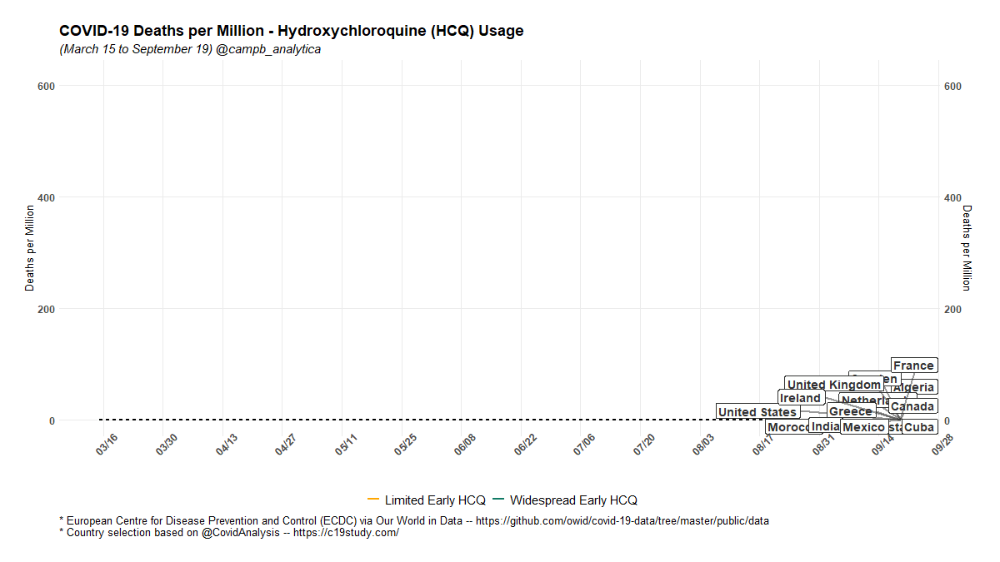
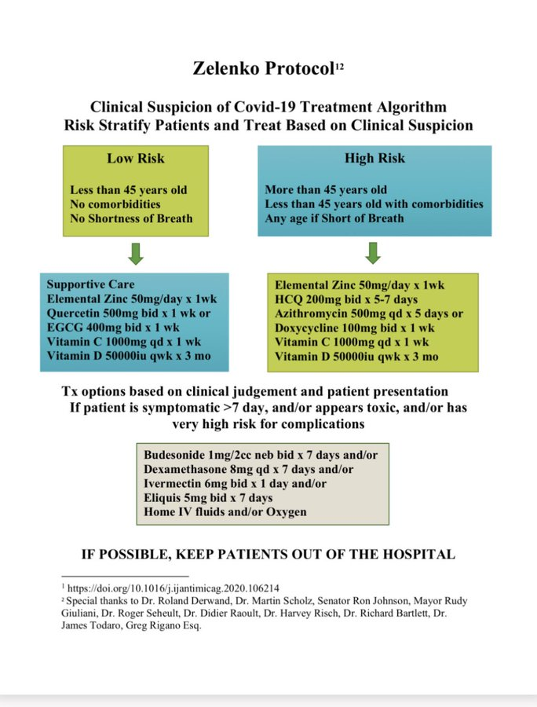
A BILLION DOSES AND ONLY 50 DEATHS.ITS ONE OF THE SAFEST DRUGS EVER.SAFER THAN ASA, TYLENOL AND MOTRIN.https://t.co/cbm3xo7a6z — Dr. Urso (@richardursomd) May 30, 2020
Cabe recordar que la HCQ se ha usado desde hace décadas con gran seguridad para padecimientos como la malaria, el lupus y la artritis reumatoide; y además, esos escasos casos de afección cardíaca (50), se registraron en personas que llevaban ya terapias a largo plazo (por varios años) con este fármaco (una media de 7 años), lo que representa también un consumo de miles de gramos totales; una cifra muchísimo mayor a la que se requiere en el tratamiento para Covid, que dura solo de 5 a 7 días.
Por tal motivo, muchos científicos están criticando con severidad la restricción gubernamental, de EEUU y países satélites, para usar la HCQ de forma masiva; y aunque no se tienen claras las causas de esta obstaculización, diferentes voces aluden a que el hecho de que la ausencia de un tratamiento efectivo, sea requisito para la aprobación de emergencia de una vacuna de parte de la FDA, podría ser la explicación.Es decir, intereses económicos y políticos, que podrían ver afectados sus planes y negocios de desarrollo farmacéutico.
De forma extraña, pareciera haber una especie de confabulación internacional entre algunos países, por bloquear, así sea mediante argumentos inventados o forzados, la utilidad de la HCQ; pues no solo secretarios de salud, sino también figuras públicas (coincidentemente con importantes inversiones en el desarrollo de otras posibles soluciones para la pandemia) como Bill Gates, han arremetido, afirmando que se trata de una sustancia sumamente peligrosa, a pesar de estar siendo usada desde hace décadas con gran éxito y sin mayor complicaciones para múltiples tratamientos, lo que ha ocasionado también la molestia en diversos profesionales de la salud.
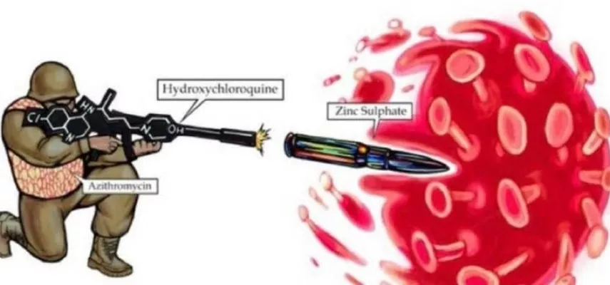
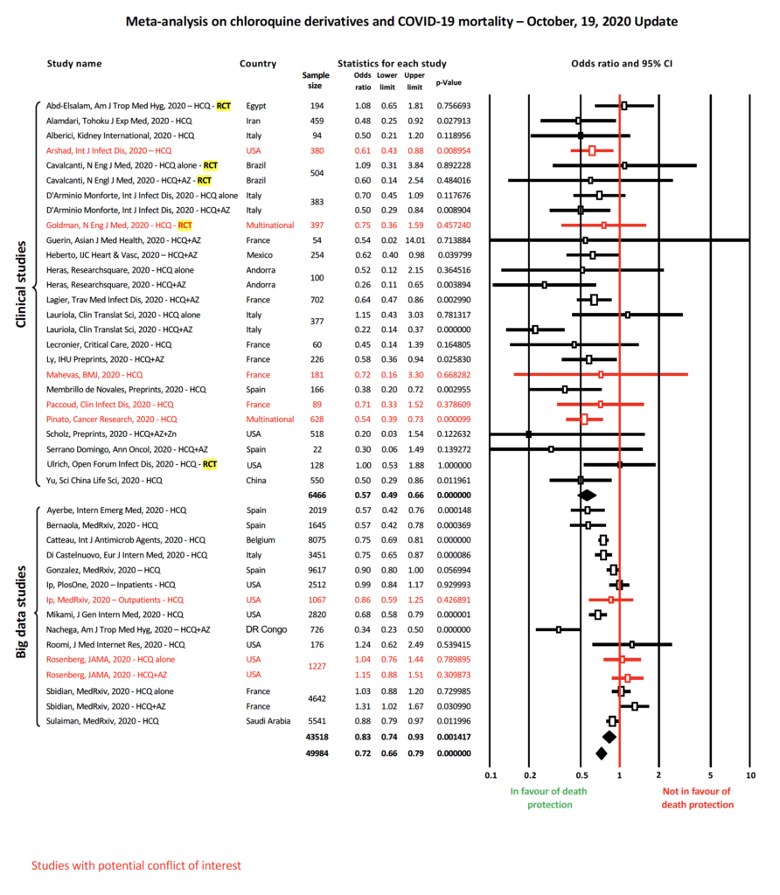
Gates needs to go to Med school.Or maybe stop opening his mouth about things that are out of his area.HCQ has 60 plus years of safety.Less than 20 documented deaths in all that time.Tylenol kills about 500 per year.Where’s the outrage.https://t.co/OtMnuM910T — Dr. Urso (@richardursomd) August 15, 2020'Gates necesita ir a la escuela de medicina.O tal vez dejar de abrir la boca sobre cosas que están fuera de su área.La HCQ tiene más de 60 años de seguridad.Menos de 20 muertes documentadas en todo ese tiempo.Tylenol mata alrededor de 500 por año.¿Dónde está la indignación?': Dr. Urso
La OMS se ha vuelto la 'Organización Mundial de Homicidios … DEJE DE ESCUCHAR A ESTAS INSTITUCIONES CORRUPTAS'… son algunas de las fuertes sentencias emitidas personalmente por el Dr Zev Zelenko, quien, ha estado también solicitando reiteradamente el reconocimiento a este tratamiento.
Otro ejemplo de esta misteriosa campaña de bloqueo a la HCQ, fue documentada por el mismo Didier Raoult, quien elaboró un estudio, donde midió con métodos científicos, el nivel de influencia que tenía la farmacéutica Gilead Sciences, quien está desarrollando el Remdivisir, un fármaco de patente (y por tanto, caro) que está siendo usado también como tratamiento (aunque con resultados menos alentadores y de mayor riesgo que la HCQ) dentro del Consejo de Infecciones de Francia.
Documentó, que curiosamente, aquellos funcionarios que habían recibido mayores subvenciones económicas de parte de dicha empresa, eran en su mayoría los que rechazaban autorizar el uso de la HCQ para el Covid en Francia; mientras que aquellos sin conflicto de interés, eran en su mayoría los que abogaban por extender su uso desde los organismos públicos de salud.
De hecho en muchos países de África, se han presentado notables resultados positivos con el Protocolo de Raoult; incluso ha sido destacado por presidentes como Macky Sall de Senegal, como el factor que ha permitido el éxito en el combate al virus en estas latitudes, donde el impacto ha sido mínimo.
No obstante que en el caso de México, se ha negado la utilidad de la HCQ desde los sectores oficiales.El subsecretario de salud, López-Gatell, afirmó que tras una investigación interna, cuyos datos nunca han sido publicados, se determinó que no era de utilidad, por lo cual a la fecha se encuentra prohibida como tratamiento para el Covid-19 en el país; sin embargo, no se ha aportado ninguna evidencia que indique que realmente se realizó con alguno de los métodos que han demostrado eficacia previa.
Otro de los tratamientos que han llamado la atención en meses recientes para tratar la enfermedad producida por el virus CoV-SARS-2, tanto por su fácil y económico acceso, como por su seguridad, es la Ivermectina, particularmente también acompañada por Zinc.
El uso de la Ivermectina está documentado en menor medida y también ha sido menos explorada en la práctica en comparación con la HCQ, no obstante que los datos que se tienen a la fecha, muestran un consenso aún mayor hacia considerarlo como un tratamiento efectivo para el Covid-19, acerca de lo cual ya hemos tenido incluso algunas exploraciones cercanas en México.
Por ejemplo, en el estado de Chiapas, se registró el primer y único desacato hasta la fecha desde una secretaría de salud estatal, hacia el llamado hecho por la Secretaría de Salud federal, para no utilizar la Ivermectina como tratamiento para el nuevo coronavirus.
Desde mediados del 2020, López-Gatell afirmó que no había evidencia suficiente para considerarlo efectivo y seguro, no obstante que a pesar de esto, el secretario de salud de Chiapas, repart
ió entre la población de riesgo de su entidad
, kits que incluían este fármaco, para un tratamiento temprano que podía iniciarse en casa.
No solo se ha mantenido una extraordinaria desocupación hospitalaria en esta entidad, además, fue la primera del país que hizo la transición hacia el color verde del semáforo epidemiológico y una de las únicas que lo mantiene; tras contener, tanto los contagios, como la letalidad del virus.De hecho, actualmente, la entidad lleva más de una semana sin reportar una sola muerte vinculada al coronavirus.
A un nivel mundial, a través de ivmmeta.com un colectivo de investigadores también llevan un registro del 100% de los estudios científicos, tanto publicados, como en trámite de aprobación, acerca del uso de la Ivermectina para tratar el Covid-19.
De forma contundente, el 100% de los estudios que se han realizado a la fecha, han demostrado facultades positivas para reducir, tanto los síntomas graves, como también la incidencia de hospitalización y la mortalidad a consecuencia del virus.
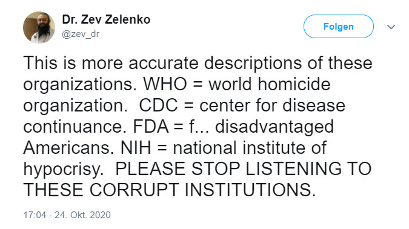
Figura 1.Metaanálisis de efectos aleatorios, excluido el tratamiento tardío.Figura 2.Historial cronológico de todos los efectos notificados, con la probabilidad de que la frecuencia observada de resultados positivos se haya producido debido a la casualidad aleatoria de un tratamiento ineficaz.Fuente: ivmmeta.com (30 de diciembre 2020).
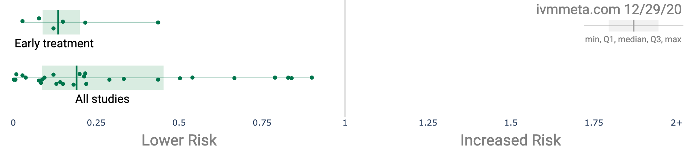
Por tal motivo, también se han generado ya diferentes pronunciamientos para adoptar con mayor énfasis esta clase de tratamientos.
Por ejemplo, en países como la India, con una población 10 veces mayor a la de México, han logrado generar una letalidad 10 veces menor a la de nuestro país, en gran medida gracias a la facilidad que han otorgado a la población para acceder al tratamiento de Ivermectina.
A lo largo de esa nación asiática, se han repartido y ofrecido de forma accesible kits especializados para el tratamiento del Covid-19 con Ivermectina.
Incluso en el Senado de los EEUU, también se han emitido pronunciamientos, como el realizado por el Dr Pierre Kory, quien además de usarlo en sus propios pacientes, lleva también el seguimiento de múltiples estudios que han demostrado la efectividad de la Ivermectina, tanto como tratamiento temprano para el Covid, así como también como método profiláctico.
El mismo doctor, también ha venido gradualmente optimizando los tratamientos, para usarse tanto como método preventivo, así como también para tratar a personas que ya han tenido contacto con el virus.
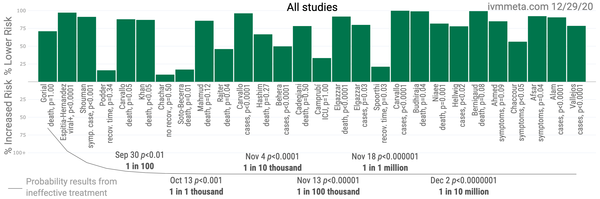
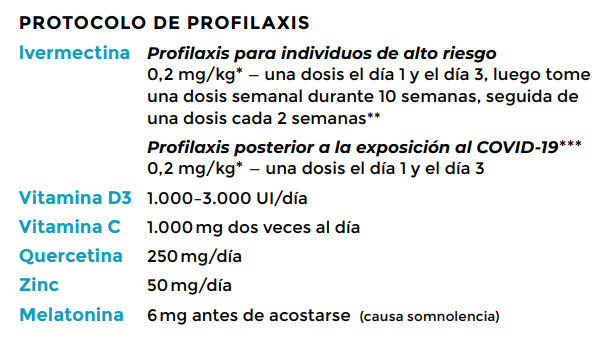
Este tratamiento también está siendo promovido y defendido por entidades como el Frontline Covid-19 Critical Care (FLCCC Alliance), quien de igual manera lleva meses aplicándolo con éxito en los EEUU.
Al igual que con la HCQ, se trata de un fármaco esencial, sumamente barato; aunque para poder adquirirlo en México -al igual que la Azitromicina o algún otro de los antibióticos sugeridos-, es necesario contar con una receta médica.
Este protocolo también ha estado en constante optimización, para verificar la versión más reciente se recomienda consultar la plataforma de FLCCC.
La versión actualizada al 30 de diciembre 2020 indica:
Tener en cuenta la existencia de tratamientos efectivos y con respaldo científico de por medio, debería ser algo que todos los ciudadanos del país deberían conocer a fondo y tomar en cuenta; pues ante la creciente incidencia de casos y la
excesiva letalidad
que se tiene en algunas entidades del país, producto de la ausencia de tratamientos, esto es una oportunidad de consideración, para minimizar las posibilidades de riesgo.
Hoy en día, ya hay ciudades donde se está volviendo una pesadilla alcanzar una fase grave del Covid-19, pues además de que están escaseando insumos esenciales como el oxígeno, además en muchos casos ya son insuficientes las camas con ventilador para tratar los casos más graves, lo que se convierte incluso en una sentencia de muerte para miles de personas; no obstante que la adopción de un tratamiento temprano, como los que están aplicándose con éxito en muchas partes del mundo, puede minimizar los riesgos, pues precisamente están diseñados para evitar tener que llegar a afrontar los efectos severos.
Y el problema también existe en el sector privado, pues una hospitalización puede generar facturas de varios cientos de miles de pesos, que están al alcance de un escaso rango de la población, o que también pueden convertirse en graves problemas de endeudamiento, y que además, ni siquiera resultan en una alternativa de tratamiento ideal, puesto que al permitirse llegar a niveles graves de la enfermedad, muchas de las secuelas ya también se vuelven vitalicias.
En este sentido, alternativas como la Hidroxicloroquina y la Ivermectina, podrían resultar de gran ayuda; más aún considerando que aún está lejos para la mayoría de ciudadanos la posibilidad de algún tipo de inmunidad con la vacunación y que se necesitan soluciones hoy; estas opciones, además resultan bastante económicas, y mejoran sensiblemente las probabilidades de evitar los efectos graves de esta afección.
Claro todo tratamiento debe estar acompañado del seguimiento de un profesional de la salud; y si bien es cierto, que quizá no sea al día de hoy una solución que se vislumbre perfecta e infalible, sí representan una oportunidad de consideración para reducir ampliamente las posibilidades de complicación.
Cabe reiterar que la principal peligrosidad de este virus, no radica en su letalidad (es 10 veces menos letal que el SARS o el AH1N1), sino en su facilidad de propagarse.En realidad, las posibilidades de padecer reacciones graves con el virus, son muy escasas (entre el 0,5 y 1,6% de contagiados); y si esta posibilidad, se reduce aún más, con la adopción de alguno de los tratamientos fáciles y accesibles que están siendo comprobados en gran parte del mundo, entonces la probabilidad de llegar a un desenlace fatal, se vuelven todavía mucho más reducidas.
No hay motivos para vivir con miedo, pero sí con precaución y con conocimiento de las alternativas que podrían ayudar a evitar complicaciones.
Este escrito fue elaborado con el ánimo de contribuir a que la población conozca más acerca de las alternativas de tratamiento que están siendo negadas; a que gente que podría ver reducidas sus posibilidades de evitar una afección grave con el virus, no tenga que llegar a esto; por lo cual, si considera que a alguien le puede ser de utilidad, lo conminamos a compartirlo, y de igual forma nos mantenemos abiertos para cualquier corrección, duda, comentario o sugerencia, a través de los comentarios.
Posted On: 2020-12-30T00:00:00
Posted By: apocaliptic
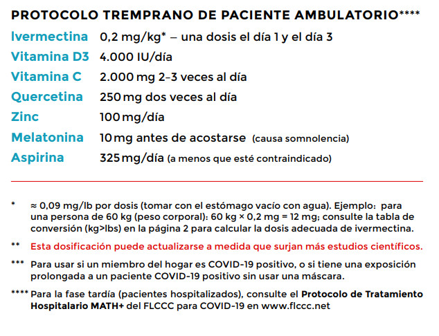
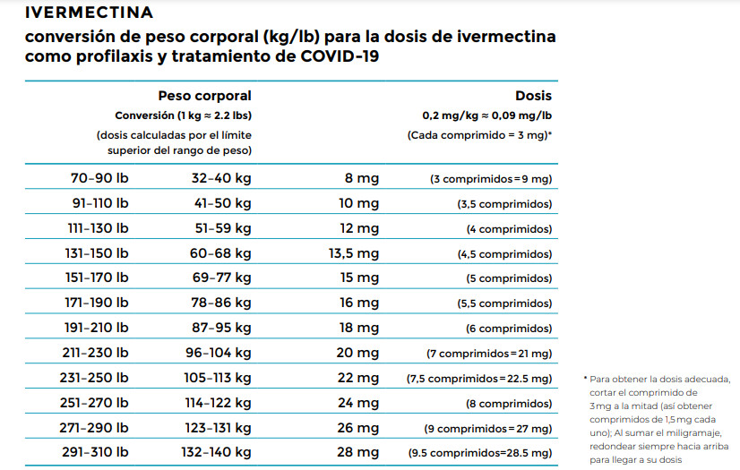
Content Date: 2020-12-30
Download Date: 2021-05-30
Document ID: L0C04CSC3